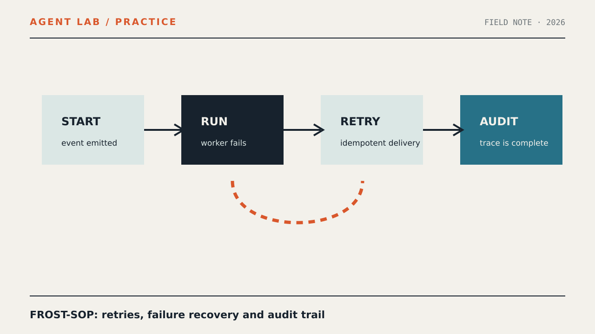

PRACTICE / AGENT LAB
Тестируем FROST-SOP: оркестрация агентов, повторные попытки и аудит событий — оркестрация AI агентов

Этот практический материал описывает ограниченный тест событийного AI-конвейера: отказ исполнителя, повторная доставка события и проверяемый аудиторский след.
Граница теста
Проверяем создание события, отказ исполнителя, повторную доставку и фиксацию результата. Материал не утверждает готовность контура к production.
Минимальный сценарий
Создайте одно событие, обработайте его, зафиксируйте отказ исполнителя, доставьте событие повторно и сохраните обе попытки с неизменным идентификатором.
Проверка
Убедитесь, что повтор не создаёт неконтролируемый дубль, итоговое состояние явно записано, а журнал содержит событие, попытки и результат.
Ограничения
Это воспроизводимый учебный сценарий, а не сертификация безопасности и не гарантия поведения в production.
Связанные запросы
Материал относится к теме «оркестрация AI агентов» и использует измеренный кластер «AI агенты» без обещания поискового результата.